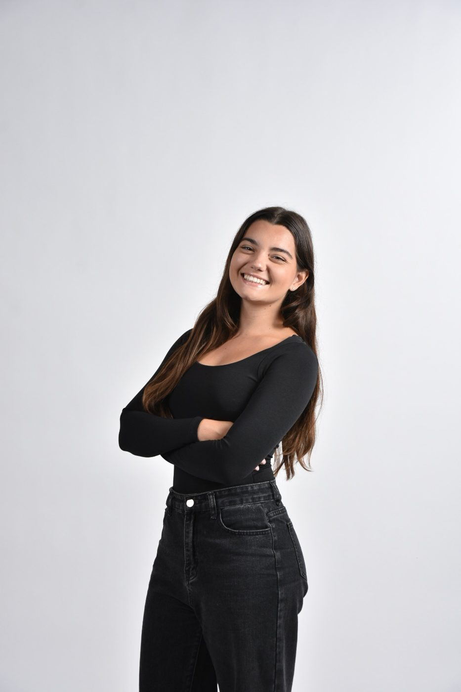
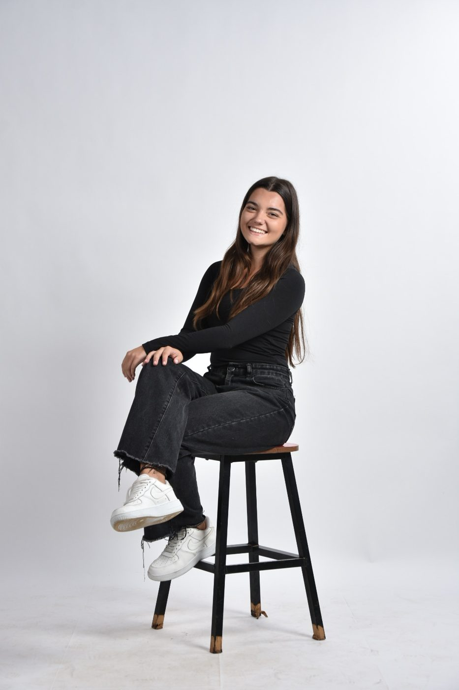
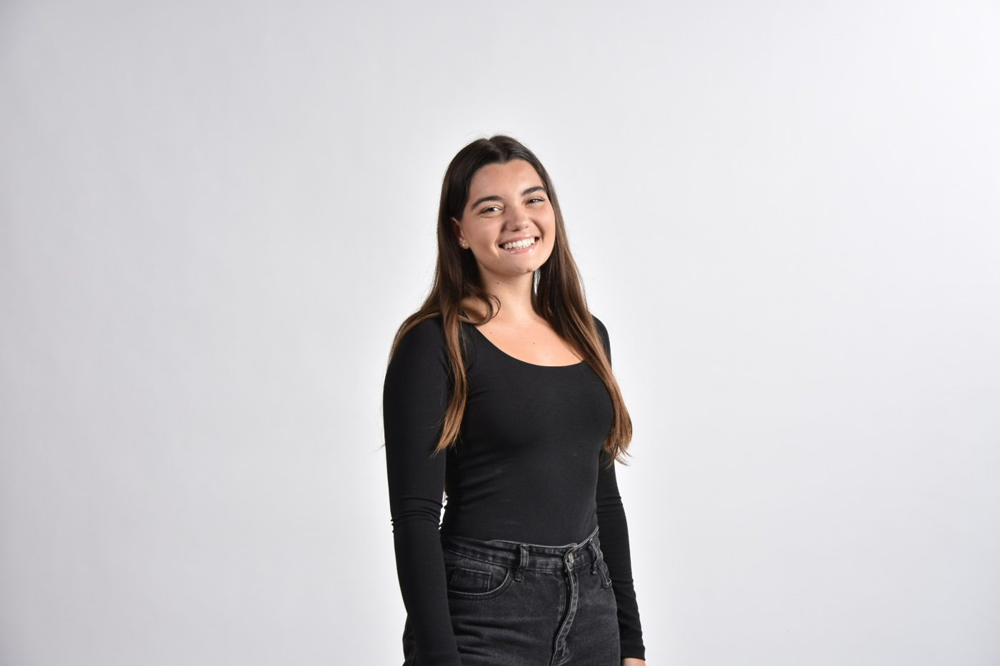
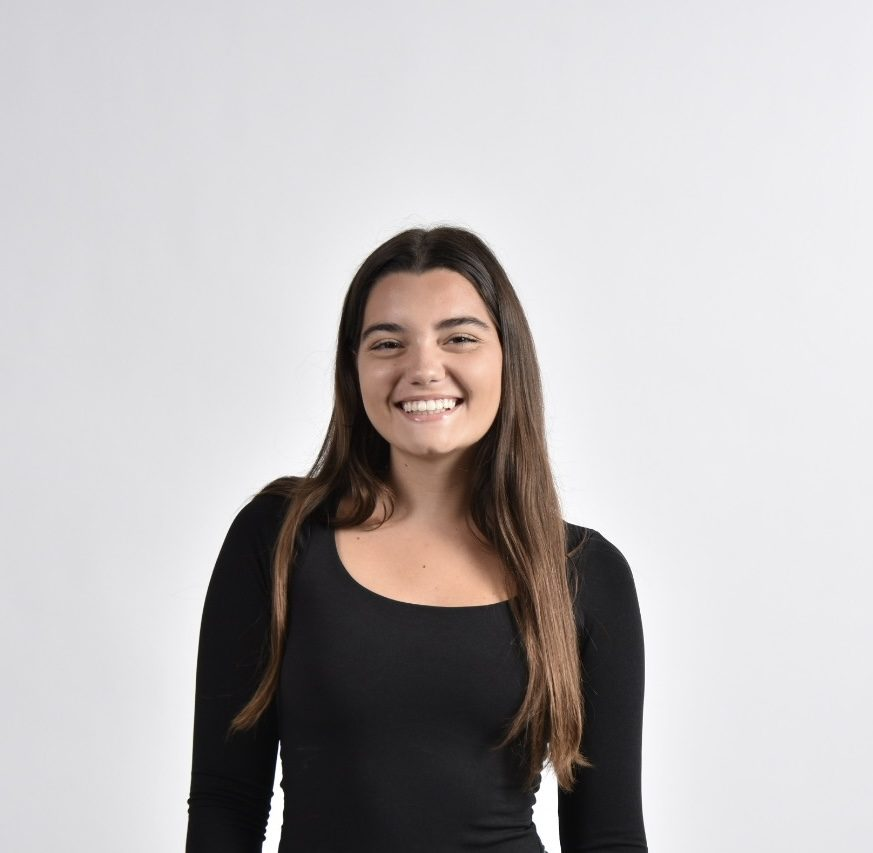

Ana Laura Carvalho Carnib
DESIGNER
Gráfica e digital, com 3 anos de experiência criando identidades visuais, posts, reels, impressos e interfaces. Gosto de transformar ideias em soluções visuais claras, funcionais e cheias de personalidade.

Curiosa por natureza, gosto de aprender rápido e de tirar ideias do papel com propósito.
Projetos
feitos com carinho
prazer!Sobre mim
Sou designer digital e estudante de Design Digital na PUC-Campinas. Atuo com design gráfico, design de posts, identidade visual e product design.
Gosto de criar experiências visuais claras, funcionais e com personalidade, seja em uma marca, uma peça impressa, um post ou uma interface. Estou sempre aprendendo e pronta para transformar ideias em soluções que comunicam bem.
Experiência
- Designer · EstágioSoftplan · nov/2025 até hoje
Peças para redes sociais, materiais de comunicação interna, páginas de site e apoio em apresentações.
- Freelancer2024 até hoje
Identidade visual, branding, materiais impressos e carrosséis editoriais para Instagram.
- Product Designer · EstágioInstituto de Pesquisas Eldorado · jun a ago/2025
Projeto para uma das principais entidades do mercado financeiro brasileiro: pesquisas e benchmarks, imersões com o cliente, prototipação de telas e fluxos de usuário.
- Estagiária de Criação711 Comunicação · nov/2023 a mai/2025
Posts e peças impressas para mais de 5 clientes, participação em reuniões de criação, desenvolvimento de identidades visuais e captação de conteúdo.
Formação
Bacharelado em Design Digital
PUC-Campinas · 2023 a 2026
Idiomas
Português nativo
Inglês intermediário
Ferramentas
Como eu trabalho
Serviços
bora criar?Do conceito à entrega final, para marcas que querem se comunicar com clareza e personalidade.
Meu currículo
Experiências, formação, ferramentas e tudo o que eu trago para o seu time, em uma página.

vamos criar juntos?
Tem um projeto, uma vaga ou só quer trocar uma ideia? Me chama por qualquer um desses canais.
